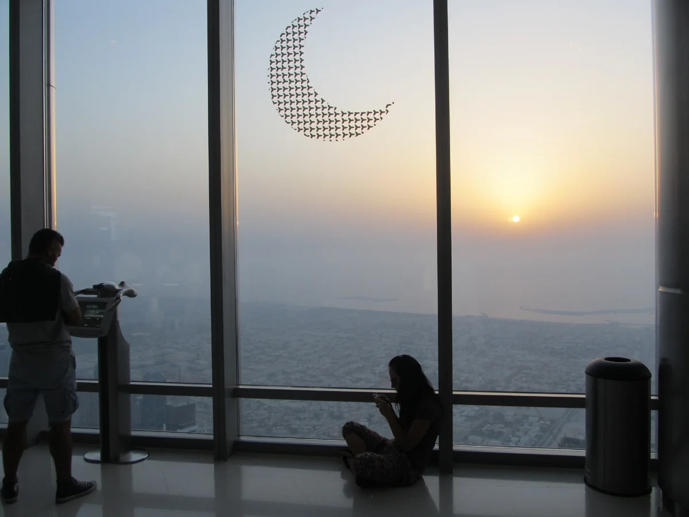
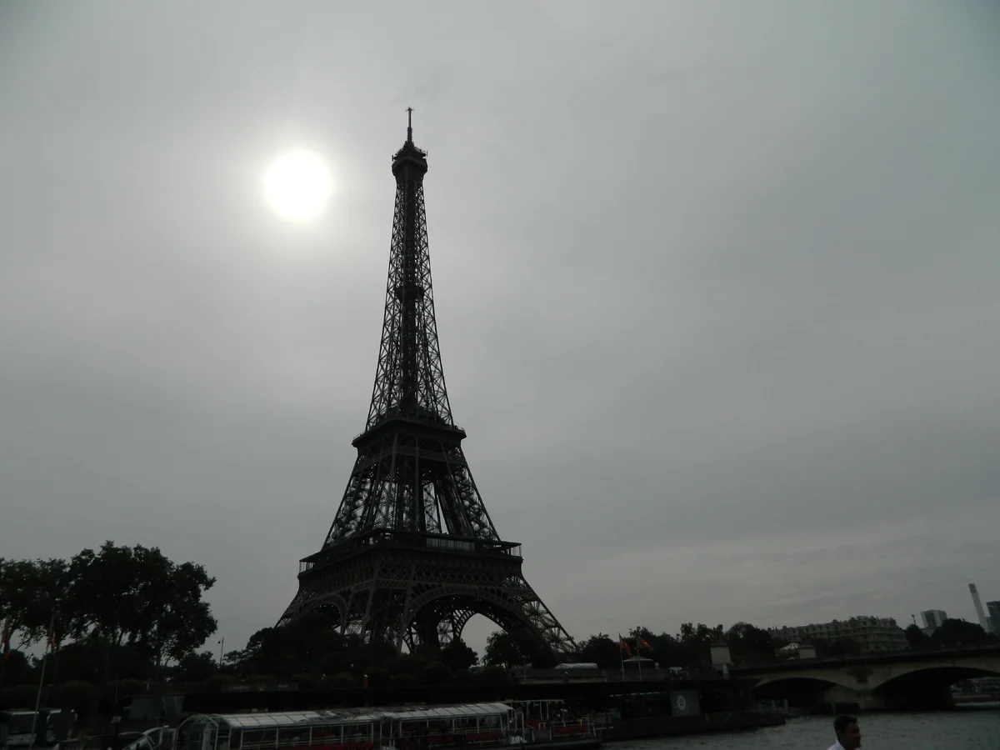

В этой статье собраны самые интересные(по моему мнению) факты в мире. Если вы знаете ещё что-нибудь, говорите…
Погнали!
10 фактов о которых вы не знали
1. Наш мозг в миллион раз мощнее компьютера. Цените себя!
Если бы человеческий мозг был компьютером, он мог бы выполнять 38 тысяч триллионов операций в секунду. Самый мощный суперкомпьютер в мире, который может управлять только 0,002% от этого.
2. Россия имеет большую площадь, чем Плутон.
Россия, имея 6 601 668 квадратных миль суши, больше на 6 427 805 квадратных миль площади поверхности Плутона.
3. Бурдж-Халифа настолько высок, что за один день можно увидеть два заката.
Вы можете видеть закат на уровне земли, а затем, если вы поднимаетесь на лифте на смотровую площадку здания, вы можете увидеть его снова уже сверху.
4. Сумочка Британской королевы - это устройство общения на языке тела.
Она используется для передачи секретных и тихих сообщений ее сотрудникам.
Например, если она закончила говорить с гостем, она переместит его из одной руки в другую, и ее помощники вежливо прекратят разговор.
А если королева пожелает внезапно завершить разговор, то положит свою сумку на землю.
5. У броненосцев настолько прочные панцири, что они могут выдержать пулю.
Один бедный техасец усвоил это на собственном опыте, когда выстрелил в броненосца, только чтобы пуля рикошетила от зверя и вернулась к нему в челюсть! Мужчина был доставлен по воздуху в больницу. Удивительно, но броненосец ушел невредимым.
6. Только четверть пустыни Сахара песчаная.
Большая часть этой гигантской пустыни покрыта гравием, хотя у нее также есть свои горные массивы и оазисы. Кроме того, это не самая большая пустыня в мире, потому что ...
7. Эйфелева башня «растет» летом.
Из-за теплового расширения основы башни под летним солнцем высота Эйфелевой башни может вырасти до 15 сантиметров!
8. Муравей не может умереть от падения.
Из-за их невероятно небольшого веса и прочного экзоскелета конечной скорости падения муравья недостаточно, чтобы убить или повредить его при ударе.
Проще говоря, они могли бы выжить, будучи сброшенными с высоты 400 м, и уйти невредимыми.
9. В течение первого месяца жизни дети видят только черно-белое изображение.
Они также видят только силуэты и не могут сосредоточиться на предметах сразу после их рождения.
Это потому, что их нервные клетки сетчатки еще не полностью сформированы, и у них нет возможности обрабатывать визуальную информацию.
10. На статуях ноги лошади рассказывают вам, как умер человек, в честь которого создан памятник.
Если у лошади обе передние ноги в воздухе, то человек погиб в бою.
Если у лошади одна из передних ног в воздухе, она погибает от ран, полученных в битве.
И если у лошади обе передние ноги на земле, то человек умер по естественным причинам.